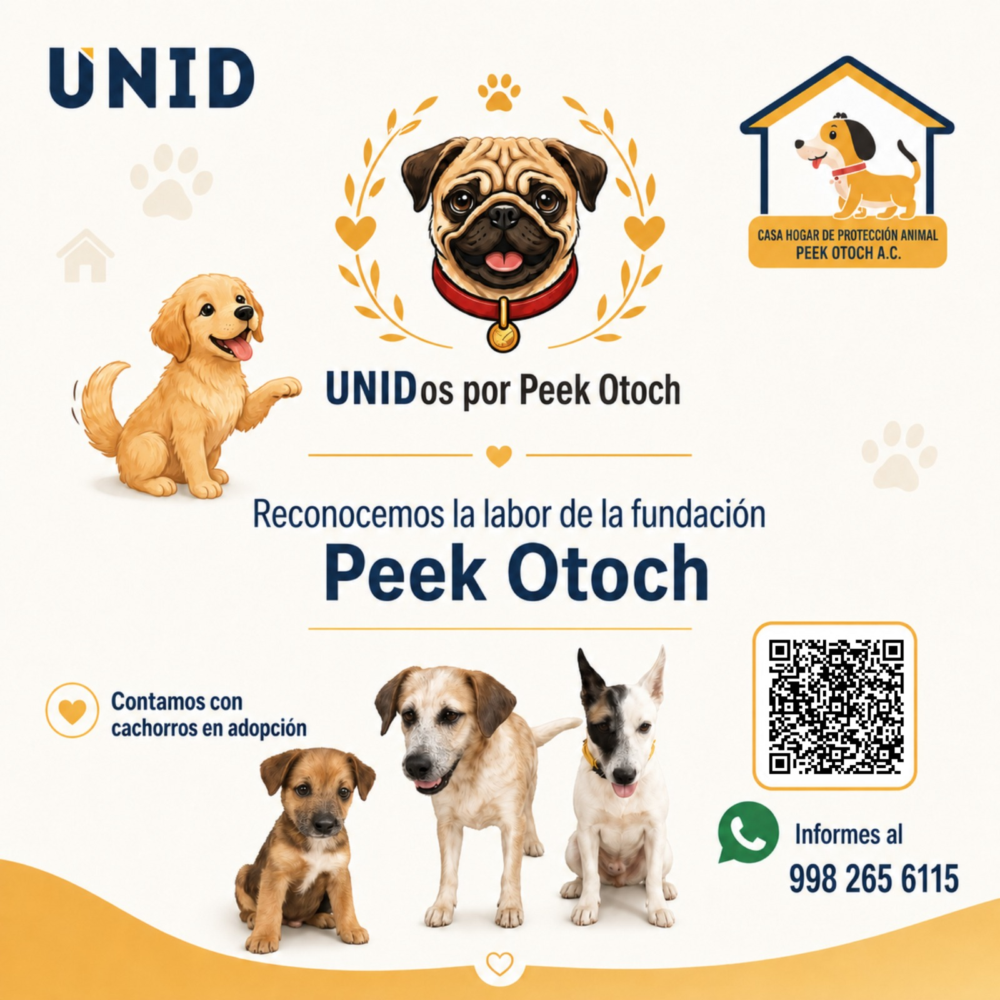
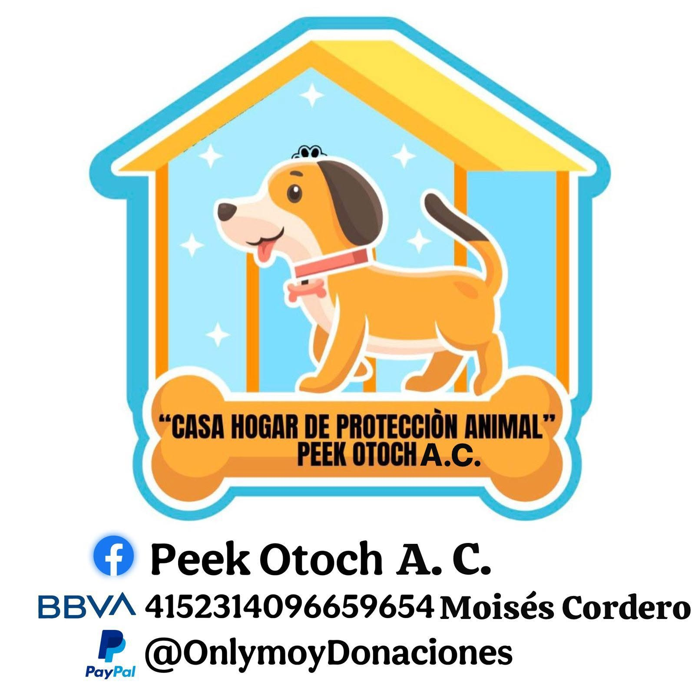

Reconocemos la labor de la fundación Peek Otoch A.C. — Casa Hogar de Protección Animal. Juntos podemos reunir 200 kg de croquetas para muchos perritos rescatados.

Meta: 200 kg
Durante nuestra visita conocimos el increíble trabajo de Doña Silvia Guzmán, fundadora de Peek Otoch — que en Maya significa "Casa de Perritos". Actualmente cuida y rescata a más de 70 perritos distribuidos en distintas ubicaciones.
Muchos han sido rescatados de situaciones de abandono, maltrato o discapacidad. Cada caso es documentado con fotografías e historial médico. El esposo de Silvia aprendió a fabricar prótesis para ayudarles a recuperar movilidad.
El refugio se sostiene gracias a donaciones, bazares y la venta de ropa en tianguis. Silvia busca adquirir un terreno en la Zona Continental para brindar mejores condiciones, especialmente a los perritos con alguna discapacidad.
Elige la forma que más te convenga. No importa cuánto dones — lo que importa es sumarse.
Trae croquetas a los puntos de recolección dentro de UNID Cancún. Cualquier marca y presentación es bienvenida.
Ver ubicacionesTransfiere directamente al refugio desde cualquier banco vía número de cuenta o CLABE.
Dona desde cualquier parte del mundo de forma rápida y segura a través de PayPal.
Comparte esta página en tus redes. Hacer ruido también es ayudar — llega a más personas que puedan sumarse.
Peek Otoch en FacebookEncuentra los puntos habilitados dentro de UNID Cancún para depositar tu donación de manera presencial.
Acude directamente a las oficinas de dirección de la universidad y entrega tu donación al personal. Te esperan con gusto.
En la entrada principal de UNID Cancún. El equipo de recepción recibirá tu donación de forma rápida y sencilla.
¿Tienes dudas sobre la entrega o el acopio? Contáctanos por WhatsApp:
998 265 6115Estos son algunos de los muchos perritos que Doña Silvia cuida con amor en Peek Otoch. Cada uno tiene su historia.
Si estás interesado en adoptar, comunícate al 998 265 6115 o visita el Facebook del refugio.
Cada kilo de croquetas que donas se convierte en días de alegría y salud para uno de estos perritos. No importa cuánto dones — lo que importa es el gesto de sumarte.